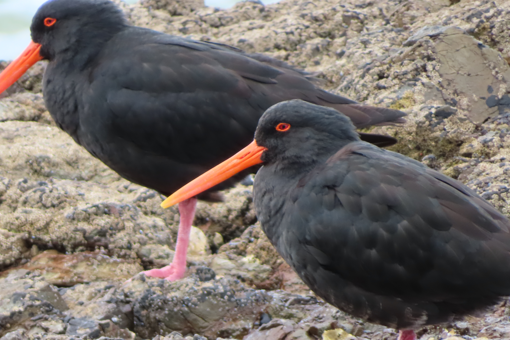
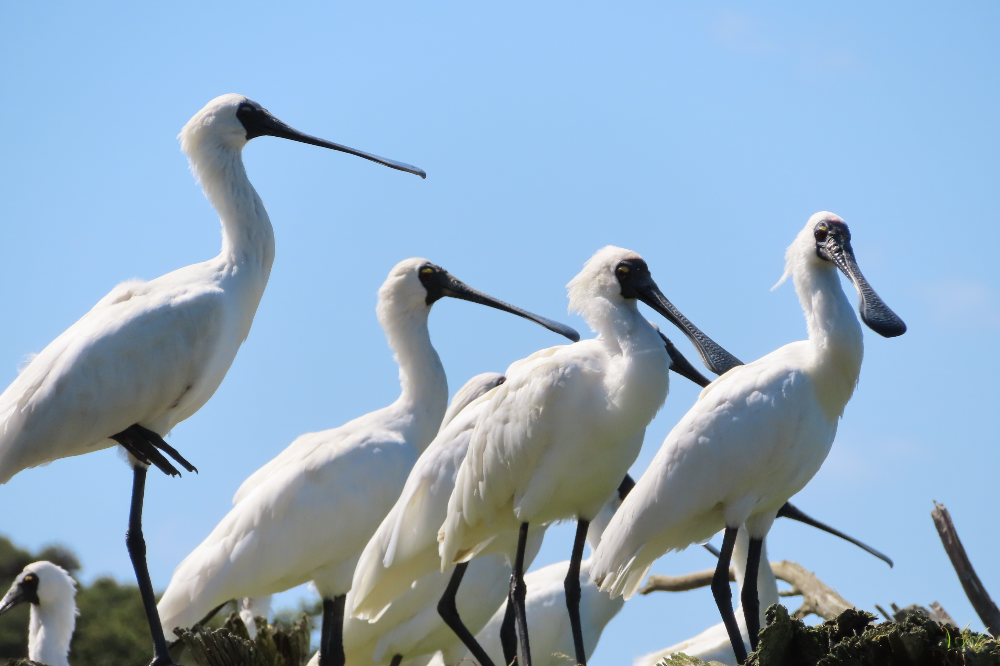
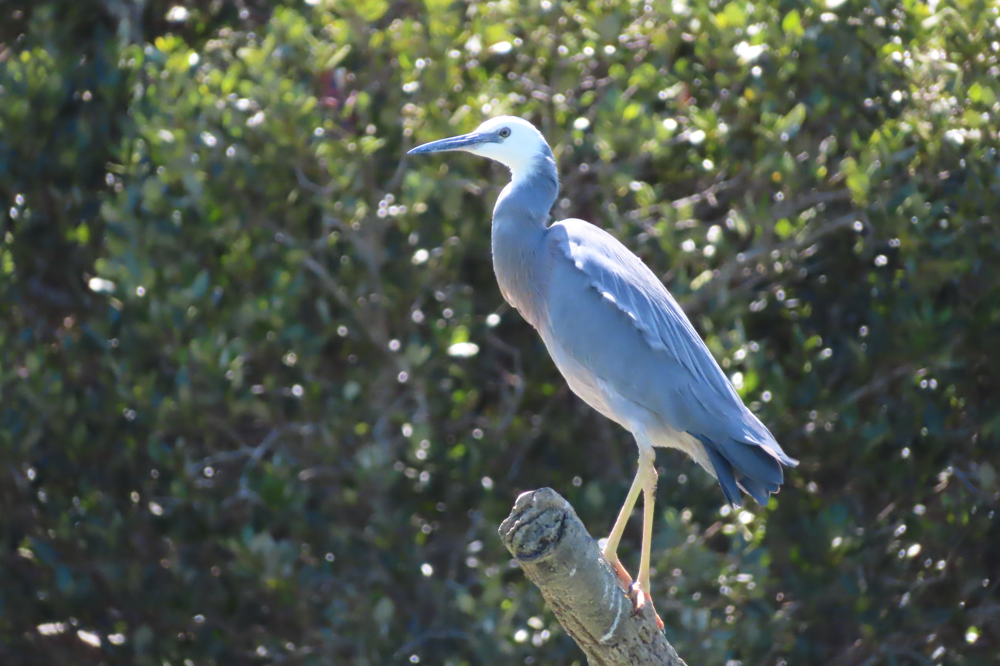
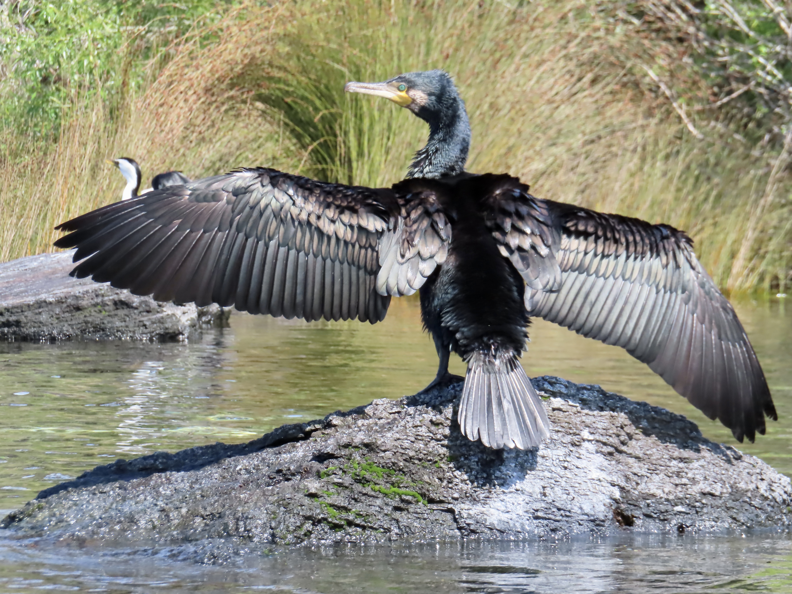
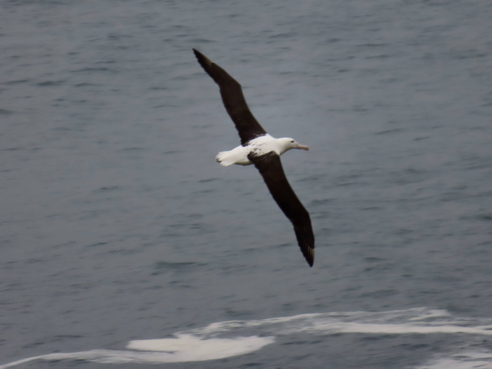
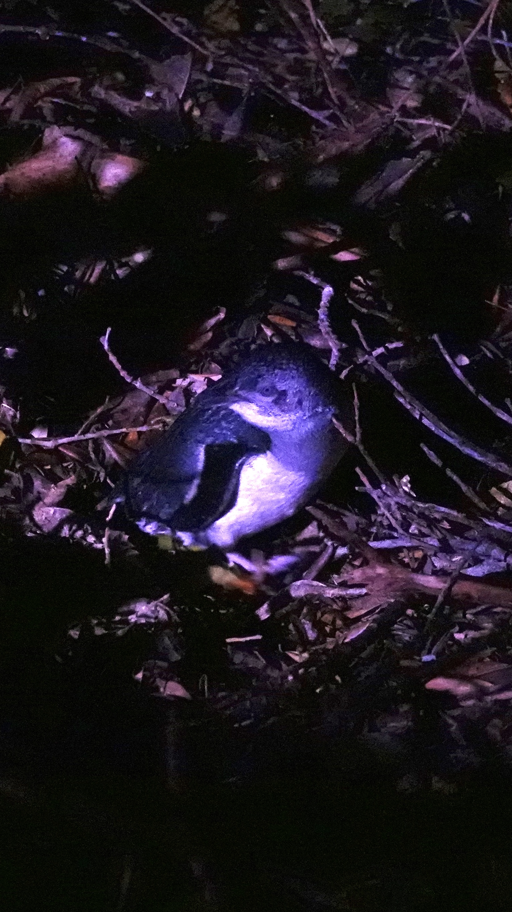
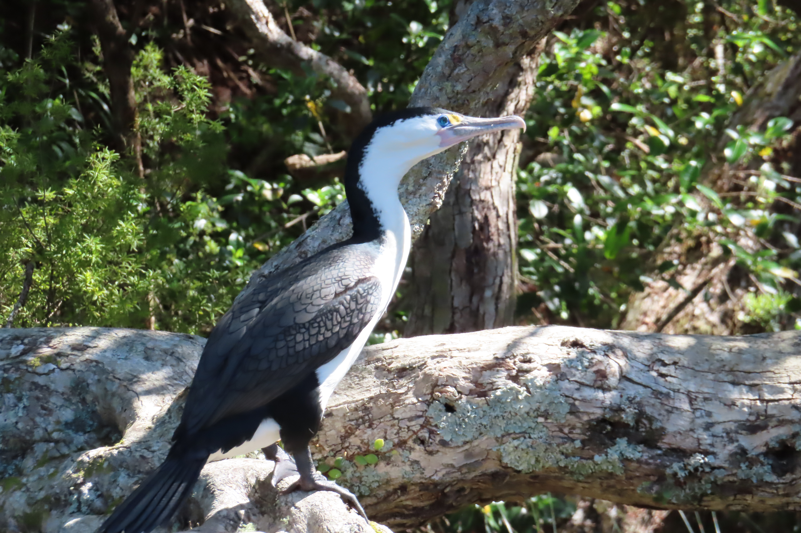
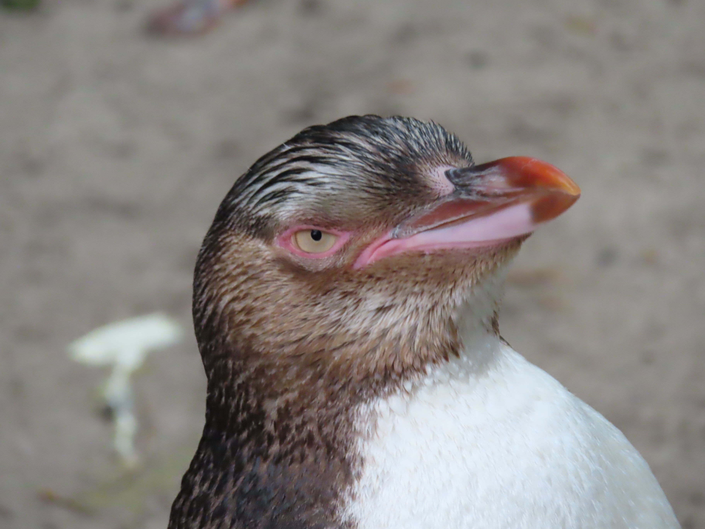
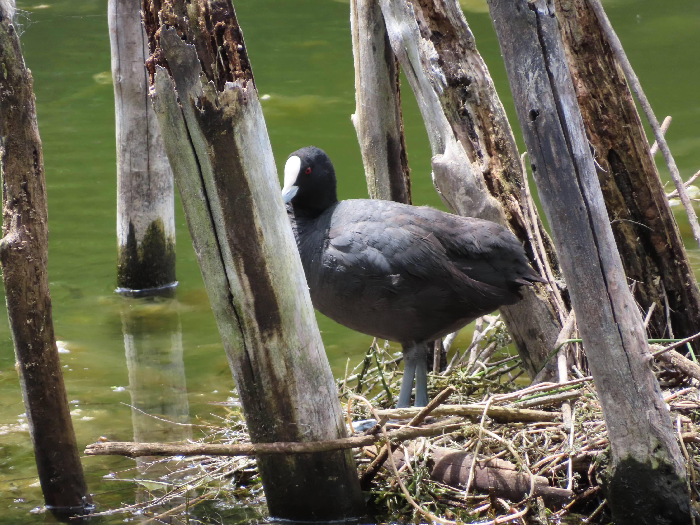
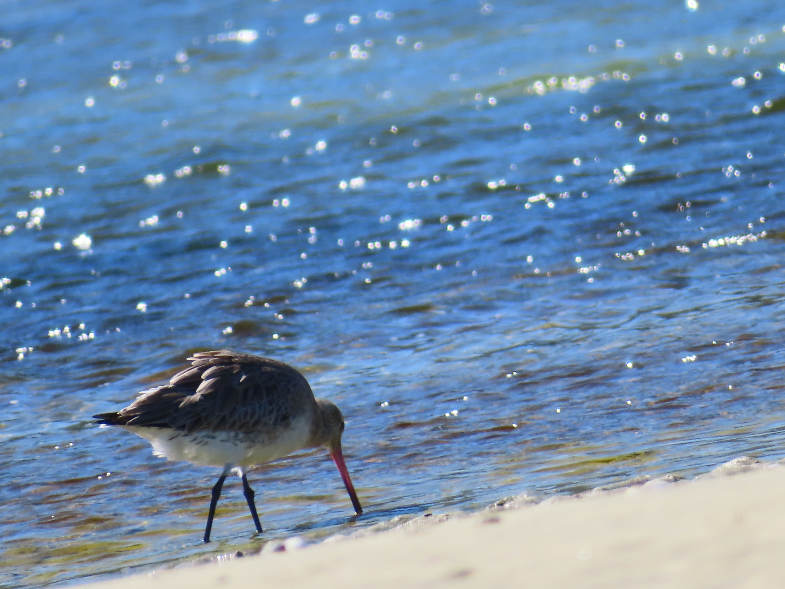

Native Seabirds

Variable Oystercatcher:
One of three oystercatcher species throughout the country
Seen frequently and lets you get close as a very charismatic subject

Royal Spoonbills:
The only spoonbills that breed in New Zealand
I felt bad drifting towards them in my kayak and eventually making them to a lap before returning

White Faced Heron:
Often confused for other heron species but is the most common species throughout the country.
The blue shades of these birds are striking

Black Shag
There are many types of Shag (cormorant) throughout New Zealand and were observed in pretty much all coastal areas
This photo taken kayaking on Lake Taupo was captured because their wings were drying

The Northern Royal Albatross:
Most of these giant birds breed on offshore islands beside the colony near the old military base in Dunedin
I captured this shot right when my camera died and it was by far the best

Kororā (little blue penguin):
The smallest penguin species in the world endemic to New Zealand
I saw one of these guys floating in the middle of the day right near a boat ramp

Imperial Shag:
Red-Billed Gull:
Absolute rats with wings throughout the country and will hawk people for food scraps
The babies make them look far less annoying

Yellow-Eyed Penguin:
These were seen within a captive breeding sanctuary called the OPERA
We had the chance to see the wild colony return from the ocean at sunset but we were not so lucky

Eurasian coot:
This bird was seen along a track in Rotorua alongside some amazing hydro-thermal activity
